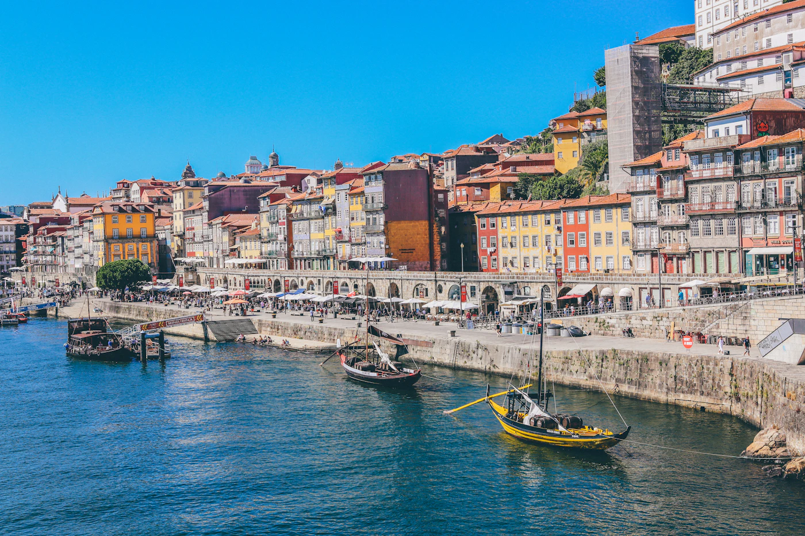

01 — 03
FIT / luxury advisor
The Atlantic Edit
A privately paced Lisbon–Alentejo–Porto journey, balancing cultural access with space to absorb each place.
- 8–11 days
- Portugal
- Flexible service layers
Illustrative routing
- Lisbon
- Alentejo
- Porto & Douro
PT Portugal ES Spain
Destination management / travel trade only
One B2B operating partner for considered programmes across Portugal and Spain—from first route logic to on-trip coordination.
Enter the operating studio38.7° N — 9.1° W to 40.4° N — 3.7° W
One local team • both destinations
White-label delivery
FIT / Groups / MICE
For the travel trade
01 / FIELD NOTES
Representative operating areas, selected to show how route character changes across the peninsula—not exhaustive coverage.

PT / 01
Current field note
Atlantic light, strong air access and a useful first chapter for culture, food and coast-led programmes.
02 / PROGRAMME DESK
Three starting frameworks. Each is reworked around audience, season, pace and commercial parameters.
01 — 03
FIT / luxury advisor
A privately paced Lisbon–Alentejo–Porto journey, balancing cultural access with space to absorb each place.
Illustrative routing
03 / OPERATING SYSTEM
Six connected workstreams, coordinated around a single partner brief.
Selected workstream
01
Supplier selection shaped by the brief, route and service level, with commercial assumptions made visible to the partner.
04 / FROM BRIEF TO GROUND
Audience, intent, pace, constraints and non-negotiables.
Route logic, service architecture and workable assumptions.
Partner feedback, costing and supplier alignment.
Bookings, guest movement and on-trip coordination.
Reconciliation, feedback and useful programme learning.
05 / BRIEF BUILDER
Build a practical enquiry in your browser. Nothing is uploaded or sent: copy or download the result and share it through your own channel.
Local-only tool. Your details stay on this device.